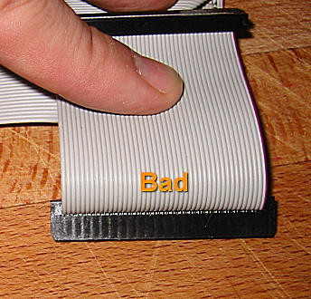
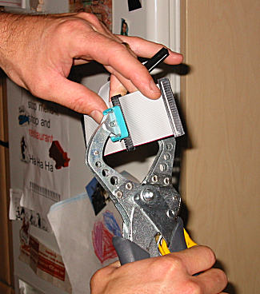
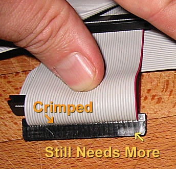
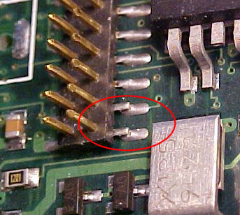
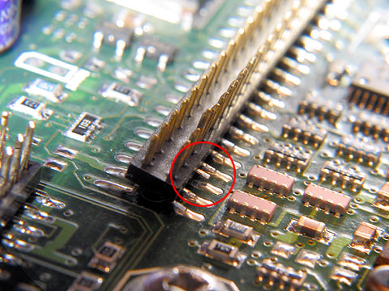
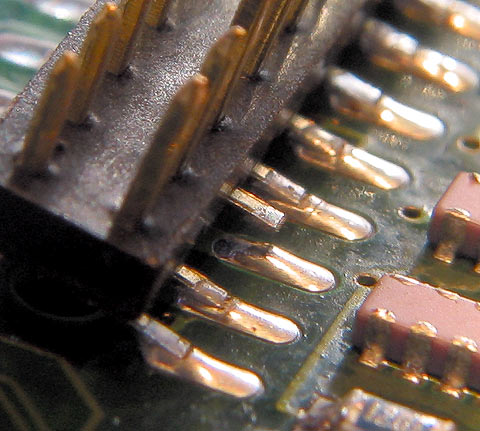

| · Why do the visuals disappear every time I put it in the car? |
| · Why is the stereo image of my MP3 messed up? |
| · I get a 'pump' error when I try to upgrade my player firmware. |
| · I get a Windows Installer or MSI error when I install Emplode. |
| · I'm having trouble with my tuner module! |
| · My tuner gets terrible reception, but the extension cable is fine. |
| · My tuner doesn't tune in the correct frequency increments. |
| · When I pause/un-pause, or sleep/wake the player, it starts in a different part of the song. |
| · Why don't fast forward and rewind work properly? |
| · When I pull the power, sometimes it plays a different song when I start it again. |
| · I can't perform an upgrade, install a logo, or install a kernel when the player is in the docking sled. |
| · Why did my player suddenly start freezing at the boot-up logo screen? |
| · Why isn't the headlight-sense dimmer working properly? |
| · Why does my player think it's at home when it's in the car? |
| · Why doesn't my player go into standby mode when I turn off the ignition? |
| · Why is there a 'thump' from my amplifiers when I turn off the ignition? |
| · Why doesn't my Rio Car work in my Mark 2 docking sled? |
| · Why is my docking connector loose? |
| · Why is my Mark 1 getting harder and harder to pull out of the sled? |
| · Why is my Mark 2 hard to pull out of the sled? |
| · Why is my warranty seal already broken? |
| · I get a 'hardware revision check failed' message when I try to upgrade! |
| · Why did ethernet and/or USB quit working after I upgraded the software? |
| · My tuner quit working after an upgrade! |
| · Why is the song count different when I shuffle? |
| · Why can't I figure out how to do searches on the player? |
| · I selected the correct title in a search, and pressed OK, but the song did not play. Why? |
| · Why does Emplode keep getting my tags wrong? |
| · Why can't I read the display in the daylight? |
| · Why am I having problems with my car alarm or my keyless entry system? |
| · My rotary knob is slipping on its shaft! |
| · What do the synchronization errors mean? |
| · The clock on my Mark 1 player does not work. |
| · The clock on my Mark 2 player does not work. |
| · The Mark (cancel) key on the Rio remote doesn't work all the time. |
| · Why is the Shuffle menu backwards? |
| · Why does my player say 'Waiting...' on the screen? |
| · Why does my player rattle when I shake it? |
| · I don't like seeing the circuitry when the sun shines on the player. |
| · I have database errors and all of my playlists disappeared! |
| · Why does Emplode say I have less disk space than I think I should have? |
| · Why does my player sound terribly distorted when I plug it into my home stereo? |
| · My remote control quit working! |
| · I have a Kenwood head unit, and its remote is controlling both players. |
| · Why doesn't Emplode work via USB on Windows? |
| · Why doesn't emplode work via ethernet on Windows XP? |
| · Emplode freezes up on 'Checking Disk Integrity'. |
| · I got an error message about 'e2fsck' at the shell prompt. What do I do to fix it? |
| · My docking sled's top edge is not 'bent'. |
| · Why doesn't my power antenna go up and down at the right time? |
| · The upper-left corner of my screen is cut off. |
| · My config.ini file went all goofy on me, and I can't edit my favorite visuals any more! |
| · My buttons and/or knob are sticking. |
| · What does the battery icon mean? |
| · I just tried to edit one of the visuals, and now my player locks up! |
| · There are glowing red lines on my display! |
| · My display has become garbled or dim. |
| · My display is blank! |
| · Why does my Mk2 player have poor stereo separation? |
| · Why doesn't my player play very high frequencies? |
| · Why doesn't the car player put out as much bass as my CD player? |
| · How do I stop it from trying to play a bad track? |
| · My player takes a long time to boot and says it is Building Music Databases. |
· Why does it say 'No hard disk found contact support'?
(Entry last updated on February 7th, 2008)Don't panic.
It could be a bad hard disk, but it could be something as simple as a loose/faulty IDE cable, a dry solder joint on the IDE connector, or a loose master/slave jumper. Most instances of this problem have been traced down to a problem with the cable, the jumper, or the IDE connector.
In versions of the player software prior to 2.0, the player would simply freeze at boot-up if something went wrong with the hard disk. They added the 'No hard disk' screen in version 2.0 of the software.
If you contact support, they can talk you through diagnosing the problem, or you can open the player and check the cabling yourself. Make sure to carefully follow the dismantling instructions in the disk upgrade guide when opening the player, because the cable is glued from beneath and you can damage it if you don't do it correctly.
There's a possibility that your unit came with a faulty cable in the first place. If this turns out to be the case, contact support or Eutronix and they can help you get a proper replacement cable. Rob's classic comment:
We did get a batch of dodgy hard drive cables (it's a shame we already stopped using the supplier, otherwise we would stop using them!).
Note that a faulty cable will look perfectly fine on a cursory inspection, the problem is that the connectors weren't crimped onto the cable properly. If you look closely, some cables have a visible gap where you can see the contacts, as shown here:

Some users have reported success in removing the cable and re-crimping the connectors by hand, but only try this if you really know what you're doing; you might damage the cable or the connectors if you're clumsy with it. Essentially, you need to apply parallel, firm pressure on both sides of each connector, but do so without crushing them. Rob Schofield suggests using a parallel-face welding clamp with rubber faces. It has been reported that a bench vise works well, too, if you're very careful with it. The important thing is not to crush or damage the connectors while squeezing them. Here is a photo of Rob himself re-crimping a cable:

Immediately after this first squeeze, the cable looked like this:

Once the whole cable looks properly crimped, you should be good to go.
Unfortunately, the cable in the Mark 2/2a units is a custom part, with the two connectors custom-crimped at specific distances from the board connector. So it's not something you can find pre-made at a local computer store. You can't use just any cable; if the length isn't correct, the shock-mount tray might not be free to move properly. The only ways to get a proper replacement are to crimp one yourself, order one from support, or order one from Eutronix.
Another thing to try: If your player is a single-disk-drive Mk2/a player, you can change the cable so that the end connector is the one attached to the drive instead of the middle connector. The middle connector is usually the dodgy one (watch that glue if you're changing the cable-- see the disk upgrade guide for details on how to properly take apart the player). You need to move the drive itself to the "secondary" position on the drive cradle so that you don't have to twist the cable in odd ways to make it work with the other connector.
If messing with the cabling doesn't solve your problem, then your next step should be getting a serial log of the bootup messages in Hyperterminal (instructions here). If it's having trouble with the disks, the "probing primary interface" stage will fail to recognize any disks (or fail to recognize both disks in a two-drive player), or it will display an error message.
If you have a recent version of Hijack installed, the boot log will show the results of IDE data tests, which may help you narrow down the problem. Please click here for more information on IDE data tests.
Other symptoms of hard disk trouble are "Failed to unmask IDE" messages, pops/clicks/stutters during MP3 playback, problems with the database, inability to synchronize with the player, and (in a two-drive unit) the player playing only some of the songs in a given playlist.
The known possible causes for disk trouble are:
- A bad disk drive.
- Problems with the IDE cable as described above.
- IDE Cable plugged in backwards or "off by one pin".
- Problems with the jumpers, the drive order, or the spinup time of a two-disk configuration as described in the Disk Upgrade Guide. Something as simple as a loose jumper could cause this. If you have a two-disk player, make sure the jumper on the second disk is the correct size and is installed tightly. A common problem is using a desktop-sized (2.54mm) jumper on a laptop drive. A laptop drive must have the smaller (2.0mm) jumper, or else you'll get this problem.
- Dry solder joints where the IDE connector joins to the motherboard. The pads that attach the connector to the motherboard haven't bonded to the solder properly, and will actually come loose from the motherboard if flexed. Wiggling the connector while carefully examining the connection points should reveal if your player has this problem. Under magnification, an IDE header problem will look like this:



It is also possible that the copper traces themselves have become delaminated and pulled up from the circuit board (not pictured). This should also be very obvious and visible if it has happened to your player.
If your player does have this problem, contact support.
WARNING:
Do not attempt to do any soldering on the player unless you have experience with soldering delicate surface-mount devices. There is a real possibility that you could permanently ruin the unit if you are clumsy, if you use too much heat, or any number of other mistakes. You're better off contacting support and having them do it for you.
|
If you believe you have the necessary skills to repair it yourself, tips on the repair can be found here.
- Possibly a problem with the CS4231A chip in the player. This is rare, but clearly visible in the serial boot log if it's the case. You will see it either initialize the CS4231A (good) or report that it's not found (bad). There are three possible reasons that it might report the CS4231A chip as not found: The chip is really bad, the ethernet controller is bad, or the motherboard needs to be modified to send a wake-up pulse to the chip. If you're lucky and the problem isn't with the ethernet controller, you can work around the problem by installing the latest Hijack kernel. The latest Hijack has a feature that allows the player to continue working without the CS4213A, with the only drawback being that the visuals don't respond to the music in Tuner and Aux modes. If the ethernet controller turns out to be bad (player still doesn't work with recent hijack), then a trip to the repair shop is in your player's future.
- Using the player in extreme temperatures (outside of the acceptable temperature range for the hard disks as described here). Or, a hard disk that has gone permanently bad because of exposure to extreme temperatures.
- Not enough juice to spin up the disk drives, for instance, if the AC adapter is faulty or if there is something wrong with the power supply wiring in the car.
- Bugs in the software, for instance, a kernel that doesn't wait long enough for the drives to spin up before it gives up the ghost. This is highly unlikely unless you modified and compiled the kernel yourself (the factory kernel and the Hijack kernel have been very stable in this regard).
- A worn or frayed IDE cable, caused by the cable rubbing against something inside the case.
- A cable that got damaged during custom hard drive installation, because you didn't see that it was glued from underneath, and you tore off the connector trying to pull the cable loose from the drive.
If you have ruled out all of the above, or if you need help diagnosing the problem, contact support.
|
| · Some wires have pulled out of my docking connector! |
| · My handle doesn't snap back into place as well as it used to. |
| · My handle sticks in the 'open' position. Can I fix it? |
| · There is a gap between the handle and the fascia. Can I fix it? |
| · What is the proper way to remove the display board and the main board? |
| · Why can't I use USB after installing or upgrading Emplode? |
| · Why is my Mark 1 having intermittent power failure problems? |
| · Why are there pops, clicks, screeches, and stutters when I play MP3s? |
| · Half of my display is blank! |
| · In DC mode, player responds extremly slowly to button presses, and music skips. |
| · My Mk2's volume knob is being jumpy! |
| · Why do I get an error message about reiserfs? |
| · Why did my player wake up in the car and start blasting music all by itself? |
| · Why does my player start doing things all by itself? |
| · Why do my remote and front panel buttons only work intermittently? |
| · Why won't the tuner scan for the next station? |
| · Why did the tuner change stations on me? |
| · Is there a way I can test the player's hard disk for sector errors? |
| · Why does it always say End of Playlist? |
| · Is there a master parts list for the car player? |
| · What do the ide_data_test messages mean? |
| · How do I fix the Daylight Savings Time dates on the player? |
| · There are vertical lines on my display! |